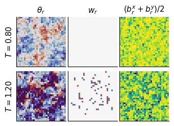
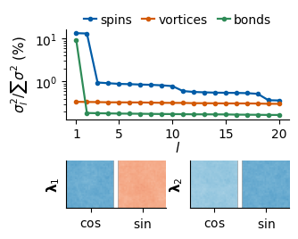
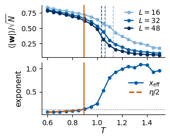
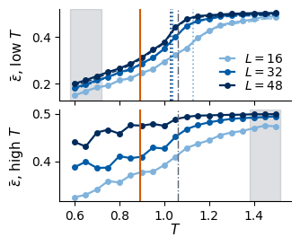
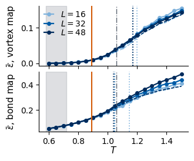
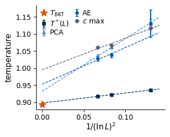
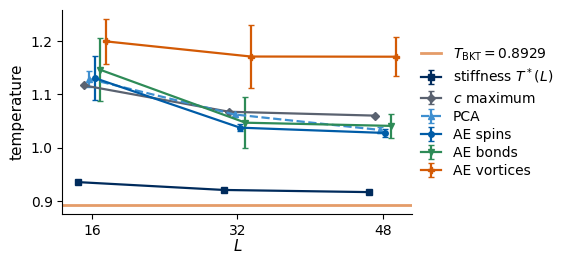

Lab 019 showed that two unsupervised methods, principal component analysis (PCA) and autoencoder (AE) anomaly detection, locate the critical temperature of the 2D Ising model from raw snapshots, and Lab 020 used the same tools to map the phase diagram of a frustrated magnet. In both models the phases differ by a local order parameter that is linear in the spins, and the methods found exactly that order parameter. The two-dimensional (2D) XY model of Lab 030 is the test case in which this picture breaks down. Its spins are planar unit vectors, the magnetisation vanishes at every temperature \(T>0\) in the thermodynamic limit (Mermin–Wagner), and the transition at \(T_{\rm BKT}\) is the Berezinskii–Kosterlitz–Thouless (BKT) transition: the unbinding of vortex–antivortex pairs, seen in the thermodynamics as a universal jump of the spin stiffness and not as the onset of any local order. The spin stiffness, or helicity modulus\(\Upsilon\), is the free-energy cost of twisting the angles across the sample, \(F(\Delta)-F(0)=\frac{\Upsilon}{2}\Delta^2\) for a total twist \(\Delta\) (defined precisely in Section 1): it is positive in the low-temperature phase, where the spins resist a twist as a superfluid resists a phase gradient, and zero in the high-temperature phase. A vortex is a plaquette of the lattice around which the angle winds once by \(2\pi\); its winding number\(w=\pm1\) (defined in Section 2) counts the windings with their sense of rotation.
We follow the protocol of the lecture: the physics is known first, then the unsupervised methods run on the snapshots without any label, and finally every number they produce is compared with the known reference values. Lab 030 gives us those reference values. The high-precision Monte Carlo result is \(T_{\rm BKT}=1/1.1199=0.8929\) (Hasenbusch 2005); the crossings of the helicity modulus with the line \(2T/\pi\) on our own lattices lie at \(T^*(L)=0.936,\,0.921,\,0.917\) for \(L=16,32,48\) and extrapolate to \(0.897\pm0.003\); the specific heat has a smooth maximum well above the transition, at \(T\approx1.06\)–\(1.12\). A detector that “finds the transition” can therefore land on three different temperatures, and Lab 030 already warned which ones are tempting: the drop of the finite-lattice magnetisation, and the smooth proliferation of vortices.
A second theme of this notebook is the input representation. A snapshot can be presented to an algorithm as the raw spin vectors \((\cos\theta_i,\sin\theta_i)\), as the map of vortices (the winding number of every plaquette), or as the map of nearest-neighbour bond energies \(\cos(\theta_i-\theta_j)\). Beach, Golubeva and Melko (2018) showed that a supervised convolutional network fed with raw spins classifies the XY phases by learning the magnetisation, and that vortex input changes what is learned. We ask the same question for the unsupervised methods. Section 1 recomputes the reference values from the data set of Lab 030, Section 2 builds the three representations, Section 3 applies PCA, Section 4 trains convolutional autoencoders on each representation and tests whether network size or a finite-size extrapolation changes the picture, and Section 5 compares every estimate with \(T_{\rm BKT}\), with the stiffness crossings and with the specific-heat maximum.
The notebook runs on the CPU. It needs the data set data/xy_L{16,32,48}.npz written by Lab 030 (run Lab 030 first, or copy the three files into data/). Figures are written to ../beamer/figures/; on 8 CPU cores the whole notebook takes about ten minutes.
Code
import osos.environ["JAX_PLATFORMS"] ="cpu"# the whole notebook runs on the CPUos.environ["CUDA_VISIBLE_DEVICES"] =""# and never touches a GPUimport time, jsonimport numpy as npimport matplotlib.pyplot as pltfrom sklearn.decomposition import PCA as SklearnPCAimport jaximport jax.numpy as jnpimport optaxfrom flax import nnxprint("JAX", jax.__version__, "| devices:", jax.devices())T_START = time.time()UJBlue, UJNavy, DSOrange, UJGray, Green ="#005CA7", "#002B5C", "#D35A05", "#5A6270", "#2E8B57"L_COLORS = {16: "#7FB2DC", 32: UJBlue, 48: UJNavy} # one colour per lattice size, light = small (as in Lab 030)# Every figure of this notebook is used on a lecture slide. It is drawn at its physical size on the slide# (text width 5.5 in, usable height about 2.6 in: a figure next to text is 3.2 in wide, a full-width one 5.5 in),# so the fonts below (10-11 pt) appear on the slide at the size of the slide text.plt.rcParams.update({"axes.spines.top": False, "axes.spines.right": False, "font.size": 10.5,"axes.labelsize": 11, "axes.titlesize": 11, "xtick.labelsize": 10, "ytick.labelsize": 10,"legend.fontsize": 10, "lines.linewidth": 1.6, "lines.markersize": 4})FIG, DATA ="../beamer/figures", "data"os.makedirs(FIG, exist_ok=True)NUMBERS = {} # numbers quoted on the slides, saved at the endsavefig =lambda fig, name: fig.savefig(f"{FIG}/{name}", dpi=200, bbox_inches="tight")TWO_PI =2* np.piT_BKT_LIT =1.0/1.1199# Hasenbusch, J. Phys. A 38, 5869 (2005)L_LIST = [16, 32, 48]DS = {L: dict(np.load(f"{DATA}/xy_L{L}.npz")) for L in L_LIST}T_GRID = DS[16]["T"]nT =len(T_GRID)for L in L_LIST: d = DS[L]assert d["theta"].shape == (nT, 192, L, L) and np.allclose(d["T"], T_GRID)print(f"L = {L}: theta {d['theta'].shape}, {int(d['n_chains'])} chains x {int(d['n_store'])} snapshots per temperature")print("temperatures:", T_GRID)
JAX 0.11.0 | devices: [CpuDevice(id=0)]
L = 16: theta (19, 192, 16, 16), 24 chains x 8 snapshots per temperature
L = 32: theta (19, 192, 32, 32), 24 chains x 8 snapshots per temperature
L = 48: theta (19, 192, 48, 48), 24 chains x 8 snapshots per temperature
temperatures: [0.6 0.65 0.7 0.75 0.8 0.85 0.9 0.95 1. 1.05 1.1 1.15 1.2 1.25
1.3 1.35 1.4 1.45 1.5 ]
1. Reference values from the data set
Every file contains, besides the snapshots theta of shape (19, 192, L, L), the per-chain averages chain_moments of shape (19, 24, 9) accumulated over all 1000 measurement steps of each Monte Carlo chain. From them we recompute, exactly as in Lab 030, the quantities against which the unsupervised results will be judged: the mean modulus of the magnetisation \(\langle|\boldsymbol m|\rangle\) with \(\boldsymbol m=\frac1N\sum_i(\cos\theta_i,\sin\theta_i)\) and \(N=L^2\), the energy per spin \(u=\langle H\rangle/N\), the specific heat \(c=(\langle H^2\rangle-\langle H\rangle^2)/(NT^2)\), the vortex density \(\langle n_v\rangle\) (plaquettes with non-zero winding number per site), and the helicity modulus (spin stiffness), the resistance of the spin system to a twist of the angles, \[
\Upsilon=\frac{1}{2N}\Big[\langle C_x+C_y\rangle-\beta\,\langle S_x^2+S_y^2\rangle\Big],\qquad
C_\mu=\sum_r\cos\Delta^\mu_r,\quad S_\mu=\sum_r\sin\Delta^\mu_r,\quad \Delta^\mu_r=\theta_{r+\hat\mu}-\theta_r ,
\] with \(J=1\) and \(\beta=1/T\).
Each of these quantities has two forms, and it is worth keeping them apart. The definition is an average over the Boltzmann distribution, \(\langle O\rangle=Z^{-1}\int d\boldsymbol\theta\,O(\boldsymbol\theta)\,e^{-\beta H(\boldsymbol\theta)}\) with the partition function \(Z=\int d\boldsymbol\theta\,e^{-\beta H}\); the energy and the specific heat are derivatives of \(\ln Z\), \(u=-\frac1N\partial_\beta\ln Z\) and \(c=\frac{\beta^2}{N}\partial_\beta^2\ln Z=\frac{\beta^2}{N}(\langle H^2\rangle-\langle H\rangle^2)\), and the helicity modulus is the curvature of the free energy \(F(\alpha)=-T\ln Z(\alpha)\) when every horizontal bond angle is shifted by a twist \(\alpha\), \(\Upsilon=\frac1N\partial_\alpha^2F|_{\alpha=0}\), which gives the expression above (with \(\langle S_\mu\rangle=0\) by symmetry, and averaged over the two directions). The estimator is what the code computes from the \(n=24\times1000\) Monte Carlo measurements per temperature: every \(\langle\cdot\rangle\) is replaced by the sample mean \(\overline{x}=\frac1n\sum_kx_k\), pooled over all chains and steps, so that \(u=\overline E/N\), \(c=\beta^2(\overline{E^2}-\overline E^{\,2})/N\) (a variance that divides by \(n\)), \(\Upsilon=[\overline{C_x+C_y}-\beta\,\overline{S_x^2+S_y^2}]/(2N)\), \(\langle|\boldsymbol m|\rangle\to\overline{|\boldsymbol m|}\) and \(\langle n_v\rangle\to\overline{n_v}\). The quantities of the later sections follow the same pattern: the PCA coordinate is \(\overline{|\mathbf w|}/\sqrt N\) (defined in Section 3) over the 192 snapshots of a temperature, and the anomaly score \(\bar\varepsilon(T)\) is the sample mean of the reconstruction error over the 96 held-out snapshots (and over the two training seeds).
Two reference temperatures follow for each \(L\): the crossing \(T^*(L)\) of \(\Upsilon_L(T)\) with the line \(2T/\pi\) (the finite-size image of the universal jump, approaching \(T_{\rm BKT}\) from above as \(L\) grows), and the position of the specific-heat maximum, from a parabola through the five grid points around it. Both are computed with the same code as in Lab 030, so the printed values must agree with the numbers quoted in the introduction.
Code
MOM = [str(s) for s in DS[16]["moment_names"]] # E, E2, C, S2, absm, m2, m4, nv, accdef reference(d):# pooled averages over the 24 chains of every temperature -> dict of arrays of shape (nT,) L =int(d["L"]); N = L * L; beta =1.0/ T_GRID v = d["chain_moments"].mean(1) # (nT, 9) col =lambda name: v[:, MOM.index(name)]returndict(absm=col("absm"), m2=col("m2"), u=col("E") / N, nv=col("nv"), c=beta**2* (col("E2") - col("E") **2) / N, ups=(col("C") - beta * col("S2")) / (2* N))def crossing(T, ups):# temperature where ups(T) - 2T/pi changes sign, linear interpolation between grid points f = ups -2* T / np.pi i = np.nonzero((f[:-1] >0) & (f[1:] <=0))[0][0]return T[i] - f[i] * (T[i +1] - T[i]) / (f[i +1] - f[i])def peak_parabola(T, y):# position of the maximum of y(T) from a parabola through the five grid points around the largest value i =int(np.argmax(y)); p = np.polyfit(T[i -2:i +3], y[i -2:i +3], 2)return-p[1] / (2* p[0])REF = {L: reference(DS[L]) for L in L_LIST}T_UPS = {L: crossing(T_GRID, REF[L]["ups"]) for L in L_LIST}T_CMAX = {L: peak_parabola(T_GRID, REF[L]["c"]) for L in L_LIST}print(f"literature: T_BKT = {T_BKT_LIT:.4f}")for L in L_LIST:print(f"L = {L}: stiffness crossing T*(L) = {T_UPS[L]:.4f} specific-heat maximum at T = {T_CMAX[L]:.3f}")NUMBERS.update(T_BKT_literature=round(T_BKT_LIT, 4), **{f"T_ups_L{L}": round(float(T_UPS[L]), 4) for L in L_LIST},**{f"T_cmax_L{L}": round(float(T_CMAX[L]), 3) for L in L_LIST})
literature: T_BKT = 0.8929
L = 16: stiffness crossing T*(L) = 0.9357 specific-heat maximum at T = 1.117
L = 32: stiffness crossing T*(L) = 0.9211 specific-heat maximum at T = 1.067
L = 48: stiffness crossing T*(L) = 0.9170 specific-heat maximum at T = 1.060
2. Three representations of a snapshot
A snapshot is the array of angles \(\theta_r\in[0,2\pi)\) on the \(L\times L\) torus. The angle itself is a poor input for a neural network: \(\theta=0.01\) and \(\theta=6.27\) describe almost the same spin but are far apart as numbers. We therefore never feed angles directly, and use three representations, each an array of shape (..., L, L, channels) with the channel axis last, as Flax convolutions expect.
The spin vectors keep all information, two channels per site, \[
\boldsymbol s_r=(\cos\theta_r,\ \sin\theta_r)\qquad\text{shape }(\dots,L,L,2).
\] Under the global rotation \(\theta_r\to\theta_r+\alpha\), the symmetry of \(H=-J\sum_{\langle ij\rangle}\cos(\theta_i-\theta_j)\), every \(\boldsymbol s_r\) is multiplied by the same \(2\times2\) rotation matrix: the representation is not invariant, and two snapshots that differ only by a rotation are physically identical but numerically different.
The vortex map is the winding number of every plaquette (Lab 030, Section 4.1), \[
w_r=\frac{1}{2\pi}\Big([\theta_{r+\hat x}-\theta_r]+[\theta_{r+\hat x+\hat y}-\theta_{r+\hat x}]+[\theta_{r+\hat y}-\theta_{r+\hat x+\hat y}]
+[\theta_r-\theta_{r+\hat y}]\Big)\in\{-1,0,1\},\qquad\text{shape }(\dots,L,L,1),
\] where \([x]\) is \(x\) mapped to \([-\pi,\pi)\) (the sum of four brackets lies in \([-4\pi,4\pi)\), and \(w_r=-2\) would need all four to equal \(-\pi\) exactly). It depends only on angle differences, so it is invariant under global rotations, and it contains exactly the topological defects that drive the transition. It discards the spin waves.
The bond-energy map keeps the two bonds leaving every site, \[
b_r=\big(\cos(\theta_{r+\hat x}-\theta_r),\ \cos(\theta_{r+\hat y}-\theta_r)\big)\qquad\text{shape }(\dots,L,L,2),
\] so that \(H=-J\sum_r(b_r^x+b_r^y)\). It is rotation invariant and is the local energy density of the snapshot.
The cell below implements the three maps and checks their symmetry properties on 16 snapshots of the \(L=32\) data set: the vortex and bond maps must not change under a global rotation, the spin vectors must rotate rigidly, and the winding numbers of every snapshot must sum to zero on the torus (every bond enters two plaquettes with opposite signs). It also compares the vortex density counted in the stored snapshots with the density \(\langle n_v\rangle\) that Lab 030 accumulated over all Monte Carlo steps.
Code
def wrap(a):# map angles to [-pi, pi)return (a + jnp.pi) % TWO_PI - jnp.pidef to_spins(theta):# (..., L, L) -> (..., L, L, 2): channels cos(theta), sin(theta)return jnp.stack([jnp.cos(theta), jnp.sin(theta)], -1)def to_vortices(theta):# (..., L, L) -> (..., L, L, 1): winding number of the plaquette with lower-left corner r, counter-clockwise t01 = jnp.roll(theta, -1, -1); t11 = jnp.roll(t01, -1, -2); t10 = jnp.roll(theta, -1, -2) circ = wrap(t01 - theta) + wrap(t11 - t01) + wrap(t10 - t11) + wrap(theta - t10)return jnp.round(circ / TWO_PI)[..., None]def to_bonds(theta):# (..., L, L) -> (..., L, L, 2): cos of the angle difference on the bond to the right (x) and to the upper (y) neighbourreturn jnp.stack([jnp.cos(jnp.roll(theta, -1, -1) - theta), jnp.cos(jnp.roll(theta, -1, -2) - theta)], -1)REPS = {"spins": to_spins, "vortices": to_vortices, "bonds": to_bonds}CHANNELS = {"spins": 2, "vortices": 1, "bonds": 2}th = jnp.asarray(DS[32]["theta"][8, :16]) # 16 snapshots at T = 1.00, shape (16, 32, 32)alpha =1.234R = jnp.array([[np.cos(alpha), -np.sin(alpha)], [np.sin(alpha), np.cos(alpha)]])assert jnp.allclose(to_spins(th + alpha), to_spins(th) @ R.T, atol=1e-5) # spins rotate rigidlyassert jnp.array_equal(to_vortices(th + alpha), to_vortices(th)) # vortex map invariantassert jnp.allclose(to_bonds(th + alpha), to_bonds(th), atol=1e-5) # bond map invariantassert jnp.all(to_vortices(th).sum((1, 2, 3)) ==0) # total winding zero on the torusenergy =-(to_bonds(th).sum((1, 2, 3))) /32**2print("shapes:", {k: f(th).shape for k, f in REPS.items()})print(f"energy per spin of the 16 snapshots from the bond map: {float(energy.mean()):+.4f} "f"chain average u(T=1.00) = {REF[32]['u'][8]:+.4f}")for L in L_LIST: w = np.asarray(to_vortices(jnp.asarray(DS[L]["theta"])))print(f"L = {L}: vortex density in the stored snapshots at T = 0.90 / 1.50: {(w[6] !=0).mean():.4f} / {(w[-1] !=0).mean():.4f}"f" (Lab 030, all MC steps: {REF[L]['nv'][6]:.4f} / {REF[L]['nv'][-1]:.4f})")
shapes: {'spins': (16, 32, 32, 2), 'vortices': (16, 32, 32, 1), 'bonds': (16, 32, 32, 2)}
energy per spin of the 16 snapshots from the bond map: -1.3174 chain average u(T=1.00) = -1.3250
L = 16: vortex density in the stored snapshots at T = 0.90 / 1.50: 0.0086 / 0.1372 (Lab 030, all MC steps: 0.0083 / 0.1372)
L = 32: vortex density in the stored snapshots at T = 0.90 / 1.50: 0.0087 / 0.1388 (Lab 030, all MC steps: 0.0091 / 0.1375)
L = 48: vortex density in the stored snapshots at T = 0.90 / 1.50: 0.0091 / 0.1371 (Lab 030, all MC steps: 0.0090 / 0.1372)
The figure shows the three representations of one \(L=32\) snapshot below \(T_{\rm BKT}\) (\(T=0.80\)) and one in the high-temperature phase (\(T=1.20\)). At \(T=0.80\) the angle varies smoothly over large regions (spin waves), the vortex map is almost empty, and the bond energies are close to \(1\) everywhere. At \(T=1.20\) the angle field is broken into small domains, vortices (red, \(w=+1\)) and antivortices (blue, \(w=-1\)) are numerous, and the bond map is noisy. Note that the three maps of one snapshot look very different: whatever an algorithm learns depends on which of them we show it.
T = 0.80: 0 vortices, 0 antivortices in the shown snapshot
T = 1.20: 33 vortices, 33 antivortices in the shown snapshot

3. Principal component analysis
3.1 Spectra of the three representations
PCA (Lab 016) receives a data matrix \(X\) of shape (n, D), one flattened snapshot per row, subtracts the mean row \(\bar{\boldsymbol x}\), and diagonalises the covariance matrix through the singular value decomposition \(X-\bar{\boldsymbol x}=USV^{\mathsf T}\), with singular values \(s_l\) on the diagonal of \(S\). The rows \(\boldsymbol\lambda_l^{\mathsf T}\) of \(V^{\mathsf T}\) are the principal directions, the variance along \(\boldsymbol\lambda_l\) is the eigenvalue \(\sigma_l^2=s_l^2/n\) of the covariance matrix, the fraction of the variance carried by direction \(l\) is \(\sigma_l^2/\sum_{l'}\sigma_{l'}^2\), and the projections \(w^{(l)}=\boldsymbol\lambda_l^{\mathsf T}(\boldsymbol x-\bar{\boldsymbol x})\) are the coordinates of a snapshot (the superscript in parentheses distinguishes them from the winding numbers \(w_r\) of the vortex map). We pool all \(19\times192=3648\) snapshots of one lattice size, with no temperature attached. For the spin vectors \(D=2N\): the first \(N\) entries of a row are the \(\cos\theta_r\), the next \(N\) the \(\sin\theta_r\); for the bond map also \(D=2N\), for the vortex map \(D=N\).
One detail matters before the first computation. The Monte Carlo chains of Lab 030 started from the ordered state \(\theta_r=0\), and at low temperature a large lattice turns its global direction only slowly, so the stored snapshots of \(L=48\) at \(T=0.60\) still point mostly near \(\theta=0\). The mean row \(\bar{\boldsymbol x}\) would then contain a spurious magnetisation along \(x\). The physics does not prefer any direction, so we rotate every snapshot by its own random angle \(\alpha\in[0,2\pi)\) before the analysis: this uses the symmetry of \(H\) and costs nothing. The rotation does not change the vortex and bond maps.
The PCA implementation in JAX is a few lines; we check it against sklearn.decomposition.PCA on the spin vectors of \(L=32\). The explained-variance fractions must agree, and so must the principal directions up to sign. The first two directions turn out to carry equal variance (we shall see why), so any rotation of the two inside their common plane is an equally valid answer; we compare the plane instead of the individual vectors, through the cosines of the principal angles between the two planes (the singular values of \(V_{\rm JAX}V_{\rm sklearn}^{\mathsf T}\) restricted to the two directions), which are \(1\) for identical planes.
Code
@jax.jitdef pca_fit(X):# X: (n, D) data matrix -> mean (D,), explained-variance fractions (min(n, D),), principal directions as rows (min(n, D), D) mu = X.mean(0) _, sv, Vt = jnp.linalg.svd(X - mu, full_matrices=False)return mu, sv**2/ jnp.sum(sv**2), Vtdef design_matrix(L, rep, seed=0):# all snapshots of size L, each rotated by a random global angle, in representation rep -> (19 * 192, D), channel-major theta = jnp.asarray(DS[L]["theta"].reshape(-1, L, L)) alpha = jax.random.uniform(jax.random.PRNGKey(seed), (theta.shape[0], 1, 1), maxval=TWO_PI) x = REPS[rep](theta + alpha) # (n, L, L, c)return jnp.moveaxis(x, -1, 1).reshape(theta.shape[0], -1) # (n, c * L * L)X32 = design_matrix(32, "spins")mu32, var32, Vt32 = pca_fit(X32)sk = SklearnPCA(n_components=10, svd_solver="full").fit(np.asarray(X32))print("explained variance, JAX :", np.round(np.asarray(var32[:6]), 5))print("explained variance, sklearn:", np.round(sk.explained_variance_ratio_[:6], 5))assert np.allclose(np.asarray(var32[:10]), sk.explained_variance_ratio_, atol=1e-5)cos_angles = np.linalg.svd(np.asarray(Vt32[:2]) @ sk.components_[:2].T, compute_uv=False)print("cosines of the principal angles between the leading planes (JAX vs sklearn):", np.round(cos_angles, 6))assert np.all(cos_angles >1-1e-4)k3 =abs(float(np.asarray(Vt32[2]) @ sk.components_[2]))print(f"|lambda_3(JAX) . lambda_3(sklearn)| = {k3:.6f} (1 means equal up to sign; below 1 the third direction is degenerate with the fourth)")
explained variance, JAX : [0.13376 0.13161 0.00951 0.00916 0.00884 0.0087 ]
explained variance, sklearn: [0.13376 0.13161 0.00951 0.00916 0.00884 0.0087 ]
cosines of the principal angles between the leading planes (JAX vs sklearn): [1. 0.999999]
|lambda_3(JAX) . lambda_3(sklearn)| = 1.000000 (1 means equal up to sign; below 1 the third direction is degenerate with the fourth)
With the implementation checked, we compute the spectrum of each representation for \(L=32\), and the overlap of the leading directions with the two uniform patterns of the spin vectors, \[
\boldsymbol u_c=\tfrac{1}{\sqrt N}(\underbrace{1,\dots,1}_{\cos\ \text{part}},\underbrace{0,\dots,0}_{\sin\ \text{part}}),\qquad
\boldsymbol u_s=\tfrac{1}{\sqrt N}(0,\dots,0,1,\dots,1),
\] measured as the length of the projection of \(\boldsymbol u_c\) and \(\boldsymbol u_s\) onto the plane of \(\boldsymbol\lambda_1,\boldsymbol\lambda_2\) (1 if the plane contains the vector). For the bond map the analogous check is the overlap of \(\boldsymbol\lambda_1\) with the uniform vector \((1,\dots,1)/\sqrt{2N}\), whose projection is proportional to the energy of the snapshot.
Code
SPEC = {}for rep in REPS: X = X32 if rep =="spins"else design_matrix(32, rep) mu, var, Vt = pca_fit(X) SPEC[rep] = (np.asarray(var), np.asarray(Vt[:4]))print(f"{rep:9s}: explained variance of the first 6 directions (%):", np.round(100* np.asarray(var[:6]), 2))N32 =32*32u_c = np.r_[np.ones(N32), np.zeros(N32)] / np.sqrt(N32); u_s = np.r_[np.zeros(N32), np.ones(N32)] / np.sqrt(N32)P = SPEC["spins"][1][:2]ov = [float(np.linalg.norm(P @ u)) for u in (u_c, u_s)]ov_b =abs(float(SPEC["bonds"][1][0] @ np.ones(2* N32) / np.sqrt(2* N32)))print(f"spins: projection of u_c, u_s onto the plane (lambda_1, lambda_2): {ov[0]:.4f}, {ov[1]:.4f}")print(f"bonds: overlap of lambda_1 with the uniform vector: {ov_b:.4f}")NUMBERS.update(pca_var_spins_L32=[round(100*float(v), 2) for v in SPEC["spins"][0][:4]], pca_var_bonds_L32=[round(100*float(v), 2) for v in SPEC["bonds"][0][:4]], pca_var_vortices_L32=[round(100*float(v), 3) for v in SPEC["vortices"][0][:4]], pca_overlap_uniform=round(min(ov), 4), pca_overlap_bonds=round(ov_b, 4))fig = plt.figure(figsize=(3.2, 2.55))gs = fig.add_gridspec(2, 2, height_ratios=[1.25, 1])a0 = fig.add_subplot(gs[0, :])for rep, col, lab inzip(REPS, [UJBlue, DSOrange, Green], ["spins", "vortices", "bonds"]): a0.plot(np.arange(1, 21), 100* SPEC[rep][0][:20], "o-", ms=3, color=col, label=lab)a0.set_yscale("log"); a0.set_xlabel("$l$", labelpad=0); a0.set_ylabel(r"$\sigma_l^2/\sum\sigma^2$ (%)")a0.set_xticks([1, 5, 10, 15, 20]); a0.legend(frameon=False, ncol=3, loc="upper center", bbox_to_anchor=(0.5, 1.3), handlelength=1.0, columnspacing=0.8, handletextpad=0.3)for j, k inenumerate([0, 1]): a = fig.add_subplot(gs[1, j]) v = SPEC["spins"][1][k].reshape(2, 32, 32) * np.sqrt(N32) a.imshow(np.concatenate([v[0], np.full((32, 3), np.nan), v[1]], 1), cmap="RdBu_r", vmin=-1.6, vmax=1.6, origin="lower") a.set_xticks([16, 51]); a.set_xticklabels([r"$\cos$", r"$\sin$"]); a.set_yticks([]) a.set_ylabel(rf"$\boldsymbol{{\lambda}}_{k +1}$")fig.tight_layout(pad=0.2, h_pad=0.4); savefig(fig, "gen_xy_ml_pca_spectra.png"); plt.show()
spins : explained variance of the first 6 directions (%): [13.38 13.16 0.95 0.92 0.88 0.87]
vortices : explained variance of the first 6 directions (%): [0.34 0.34 0.33 0.33 0.33 0.33]
bonds : explained variance of the first 6 directions (%): [9.28 0.19 0.18 0.18 0.18 0.18]
spins: projection of u_c, u_s onto the plane (lambda_1, lambda_2): 0.9995, 0.9995
bonds: overlap of lambda_1 with the uniform vector: 0.9986

The three spectra are very different. For the spin vectors two directions stand far above the rest and carry equal variance, and the images show what they are: the \(\cos\) part and the \(\sin\) part are each uniform, i.e. \(\boldsymbol\lambda_1,\boldsymbol\lambda_2\) span the plane of \(\boldsymbol u_c,\boldsymbol u_s\) (projections printed above, close to 1). The equal variance is the rotation symmetry: after the random rotations, \(m_x\) and \(m_y\) fluctuate identically, and PCA has found the two components of the magnetisation as an \(O(2)\) pair. The next directions are the long-wavelength spin waves, again in degenerate groups. For the bond map one direction dominates and is the uniform pattern, i.e. the energy of the snapshot. For the vortex map the spectrum is flat: there is no linear combination of the winding numbers that varies much more than any other. The uniform combination, the total vorticity, is exactly zero on the torus, and the physics of the transition, whether vortices are bound in pairs, is a statement about correlations between defects, not about a linear pattern. PCA has nothing to find there.
3.2 The magnetisation pair and its finite-size drift
The projections onto the leading plane give a two-component coordinate \(\mathbf w=(w^{(1)},w^{(2)})\) per snapshot. Because the plane is spanned by \(\boldsymbol u_c\) and \(\boldsymbol u_s\), and \(\boldsymbol u_c\cdot\boldsymbol x=\frac{1}{\sqrt N}\sum_r\cos\theta_r=\sqrt N\,m_x\), \[
\frac{|\mathbf w|}{\sqrt N}=\frac{\sqrt{(w^{(1)})^2+(w^{(2)})^2}}{\sqrt N}\simeq|\boldsymbol m| ,
\] so the PCA order parameter is the modulus of the finite-lattice magnetisation. We compute it for all three sizes and locate the temperature where it falls fastest, \(T_{\rm PCA}(L)\): the maximum of \(-d\langle|\mathbf w|\rangle/dT\), estimated by central differences on the grid and refined with a parabola through the three largest slopes. The error bar comes from a bootstrap over the 24 independent Monte Carlo chains (we resample chains with replacement, 200 times, and take the standard deviation of the estimate).
Lab 030 tells us what to expect. Below \(T_{\rm BKT}\) the magnetisation decays as \(\langle|\boldsymbol m|\rangle\propto L^{-\eta(T)/2}\) with \(\eta(T)=T/(2\pi\Upsilon)\), so it is a power law in \(L\) with a small exponent, never an order parameter; above \(T_{\rm BKT}\) it decays faster, as \(\xi/L\) once the correlation length \(\xi\) is smaller than \(L\). The lower panel of the figure tests this with the effective exponent \(x_{\rm eff}(T)\) from a fit \(\langle|\mathbf w|\rangle/\sqrt N\propto L^{-x_{\rm eff}}\) to the three sizes, compared with \(\eta/2=T/(4\pi\Upsilon_{48})\) computed from the measured helicity modulus of \(L=48\).
Code
def steepest(T, y, sign=+1):# temperature of the steepest rise (sign=+1) or fall (sign=-1) of y(T): central differences, parabola through the 3 largest slopes d = sign * np.gradient(y, T) i =int(np.clip(np.argmax(d), 1, len(T) -2)) p = np.polyfit(T[i -1:i +2], d[i -1:i +2], 2)returnfloat(np.clip(-p[1] / (2* p[0]), T[i -1], T[i +1]))def bootstrap_steepest(per_sample, chain, sign=+1, n_boot=200, seed=0):# per_sample: (nT, n) values for n snapshots per temperature; chain: (n,) chain index of each snapshot.# Returns the estimate from all snapshots and its bootstrap standard deviation over chains. rng = np.random.default_rng(seed) chains = np.unique(chain) per_chain = np.stack([per_sample[:, chain == c].mean(1) for c in chains], 1) # (nT, n_chains) boot = [steepest(T_GRID, per_chain[:, rng.integers(0, len(chains), len(chains))].mean(1), sign) for _ inrange(n_boot)]return steepest(T_GRID, per_chain.mean(1), sign), float(np.std(boot))ZABS, T_PCA = {}, {}for L in L_LIST: N = L * L X = design_matrix(L, "spins") mu, var, Vt = pca_fit(X) z = (X - mu) @ Vt[:2].T # (3648, 2) ZABS[L] = np.asarray(jnp.linalg.norm(z, axis=1) / np.sqrt(N)).reshape(nT, -1) # (nT, 192) m_abs = np.hypot(np.cos(DS[L]["theta"]).mean((-2, -1)), np.sin(DS[L]["theta"]).mean((-2, -1))) T_PCA[L] = bootstrap_steepest(ZABS[L], DS[L]["chain"], sign=-1)print(f"L = {L}: variance fraction of lambda_1, lambda_2 = {100*float(var[0] + var[1]):.1f}% , max |<|w|>/sqrt(N) - <|m|>| over T = "f"{np.abs(ZABS[L].mean(1) - m_abs.mean(1)).max():.4f} , steepest fall at T_PCA = {T_PCA[L][0]:.3f} +- {T_PCA[L][1]:.3f}")NUMBERS.update(**{f"T_pca_L{L}": round(T_PCA[L][0], 3) for L in L_LIST}, **{f"T_pca_err_L{L}": round(T_PCA[L][1], 3) for L in L_LIST})zbar = np.stack([ZABS[L].mean(1) for L in L_LIST]) # (3, nT)x_eff =-np.polyfit(np.log(L_LIST), np.log(zbar), 1)[0] # (nT,)eta_half = T_GRID / (4* np.pi * REF[48]["ups"])for T in [0.60, 0.70, 0.80, 0.90, 1.00]: i =int(np.argmin(abs(T_GRID - T)))print(f"T = {T_GRID[i]:.2f}: x_eff = {x_eff[i]:.3f} eta/2 = T/(4 pi Upsilon_48) = {eta_half[i]:.3f}")print(f"T = 1.20: x_eff = {x_eff[12]:.3f}; T = 1.50: x_eff = {x_eff[-1]:.3f}")NUMBERS.update(x_eff_T060=round(float(x_eff[0]), 3), eta_half_T060=round(float(eta_half[0]), 3), x_eff_T090=round(float(x_eff[6]), 3), eta_half_T090=round(float(eta_half[6]), 3), x_eff_T150=round(float(x_eff[-1]), 3))fig, ax = plt.subplots(2, 1, figsize=(3.2, 2.6), sharex=True)for L in L_LIST: ax[0].plot(T_GRID, ZABS[L].mean(1), "o-", color=L_COLORS[L], label=f"$L={L}$") ax[0].axvline(T_PCA[L][0], color=L_COLORS[L], ls="--", lw=1)ax[0].set_ylabel(r"$\langle|\mathbf{w}|\rangle/\sqrt{N}$"); ax[0].legend(frameon=False, borderpad=0.1, labelspacing=0.1, handlelength=1.2)ax[1].plot(T_GRID, x_eff, "o-", color=UJBlue, label=r"$x_{\rm eff}$")low = T_GRID <=0.90+1e-9ax[1].plot(T_GRID[low], eta_half[low], "--", color=DSOrange, lw=2, label=r"$\eta/2$")ax[1].axhline(1/8, color=UJGray, ls=":", lw=1)ax[1].set_xlabel("$T$", labelpad=0); ax[1].set_ylabel("exponent"); ax[1].legend(frameon=False, loc="center right", borderpad=0.1, labelspacing=0.1)for a in ax: a.axvline(T_BKT_LIT, color=DSOrange, lw=1.5)fig.tight_layout(pad=0.2, h_pad=0.3); savefig(fig, "gen_xy_ml_pca_order.png"); plt.show()
L = 16: variance fraction of lambda_1, lambda_2 = 34.7% , max |<|w|>/sqrt(N) - <|m|>| over T = 0.0008 , steepest fall at T_PCA = 1.129 +- 0.015
L = 32: variance fraction of lambda_1, lambda_2 = 26.5% , max |<|w|>/sqrt(N) - <|m|>| over T = 0.0011 , steepest fall at T_PCA = 1.062 +- 0.006
L = 48: variance fraction of lambda_1, lambda_2 = 23.3% , max |<|w|>/sqrt(N) - <|m|>| over T = 0.0021 , steepest fall at T_PCA = 1.033 +- 0.006
T = 0.60: x_eff = 0.064 eta/2 = T/(4 pi Upsilon_48) = 0.058
T = 0.70: x_eff = 0.065 eta/2 = T/(4 pi Upsilon_48) = 0.072
T = 0.80: x_eff = 0.085 eta/2 = T/(4 pi Upsilon_48) = 0.089
T = 0.90: x_eff = 0.128 eta/2 = T/(4 pi Upsilon_48) = 0.117
T = 1.00: x_eff = 0.247 eta/2 = T/(4 pi Upsilon_48) = 0.248
T = 1.20: x_eff = 0.989; T = 1.50: x_eff = 0.954

The upper panel looks like the plot of an order parameter: \(\langle|\mathbf w|\rangle/\sqrt N\) is large at low \(T\) and falls around \(T\approx1\). It agrees with \(\langle|\boldsymbol m|\rangle\) of the same snapshots to the printed accuracy, so PCA has rediscovered the magnetisation, as for the Ising model in Lab 019. Two observations show that this is not an order parameter of the XY model. The low-temperature plateau itself decreases with \(L\), and up to \(T_{\rm BKT}\) the effective exponent in the lower panel follows the prediction \(\eta/2\) computed from the measured stiffness (for example \(0.064\) against \(0.058\) at \(T=0.60\), \(0.128\) against \(0.117\) at \(T=0.90\)): a power law in \(L\), so \(\langle|\mathbf w|\rangle\to0\) as \(L\to\infty\) at every temperature. And the steepest-fall temperatures \(T_{\rm PCA}(L)\) (dashed lines) lie above \(T_{\rm BKT}\) and drift to lower \(T\) as \(L\) grows. What PCA locates is roughly the temperature at which the correlation length becomes comparable with the lattice: a finite-size crossover, which approaches \(T_{\rm BKT}\) only logarithmically slowly (the same mechanism as for the stiffness crossings, Lab 030 Section 5.3). At high temperature the exponent approaches \(1\), the value for \(\xi\ll L\).
This agrees with Hu, Singh and Scalettar (2017), who applied PCA to the XY model, found the magnetisation, and noted that PCA does not capture the vorticity; Wang and Zhai (2017) applied PCA to frustrated XY models with the same \((\cos\theta,\sin\theta)\) input.
4. Autoencoder anomaly detection
4.1 A convolutional autoencoder on the torus
The autoencoder (Lab 017) compresses a snapshot \(\boldsymbol x\) to a few latent numbers and reconstructs it, \(\hat{\boldsymbol x}= D_\phi(E_\psi(\boldsymbol x))\). Trained only on snapshots from one region of temperature, it reconstructs snapshots that resemble the training data well and the others badly. The reconstruction error of one snapshot, \[
\varepsilon(\boldsymbol x)=\frac{1}{N\,C}\sum_{r}\sum_{c=1}^{C}\big(x_{r,c}-\hat x_{r,c}\big)^2 ,
\] with \(C\) the number of channels, averaged over the snapshots at temperature \(T\), \(\bar\varepsilon(T)\), is the anomaly score (Kottmann, Huembeli, Lewenstein, Acín 2020). The same network is used for all three representations; only the number of input channels changes. With shapes for a batch of \(B\) snapshots of size \(L\) (divisible by 4):
ReLU is the rectified linear unit, \(\mathrm{ReLU}(x)=\max(0,x)\), applied to every entry; a stride of 2 halves each spatial dimension. The convolutions use periodic (“circular”) padding, the boundary condition of the lattice, and the latent space has 4 numbers as in Lab 020. The output is linear because the targets differ between representations (\(\cos\theta,\sin\theta\in[-1,1]\), \(w\in\{-1,0,1\}\), \(b\in[-1,1]\)).
The training protocol uses what we know about the model. Every training batch is rotated by fresh random angles \(\alpha\), one per snapshot, before being converted to the representation: the network sees every global direction and never has to learn a direction-specific reconstruction (for vortices and bonds the rotation changes nothing). The 24 Monte Carlo chains of each temperature are split: chains 0–11 provide the training snapshots, chains 12–23 the evaluation snapshots, so that the error at the training temperatures is measured on snapshots the network has not seen. The training region is the low-temperature end \(T\in\{0.60,0.65,0.70\}\), well below \(T_{\rm BKT}\), where spin-wave theory describes the physics (Lab 030); for the raw spins we also train on the high-temperature end \(T\in\{1.40,1.45,1.50\}\). That gives \(3\times96=288\) training snapshots; we train with the Adam optimiser (adaptive moment estimation, Lab 017; learning rate \(10^{-3}\), batches of 32, 40 epochs). Every low-temperature training is repeated with two random seeds, the high-temperature control is trained once. A temperature estimate \(T_{\rm AE}(L)\) is the position of the steepest rise of \(\bar\varepsilon(T)\), with the same estimator and chain bootstrap as for PCA, applied to the seed-averaged curve.
The cell defines the model and checks the shapes for all three sizes and representations.
Code
class ConvAE(nnx.Module):def__init__(self, channels, L, latent=4, width=1, *, rngs):# width multiplies the number of filters (16 and 32 for width = 1)self.l4, f1, f2 = L //4, 16* width, 32* widthself.f2 = f2self.c1 = nnx.Conv(channels, f1, (3, 3), strides=2, padding="CIRCULAR", rngs=rngs) # L -> L/2self.c2 = nnx.Conv(f1, f2, (3, 3), strides=2, padding="CIRCULAR", rngs=rngs) # L/2 -> L/4self.fe = nnx.Linear(self.l4 *self.l4 * f2, latent, rngs=rngs)self.fd = nnx.Linear(latent, self.l4 *self.l4 * f2, rngs=rngs)self.d1 = nnx.ConvTranspose(f2, f1, (3, 3), strides=(2, 2), padding="SAME", rngs=rngs) # L/4 -> L/2self.d2 = nnx.ConvTranspose(f1, channels, (3, 3), strides=(2, 2), padding="SAME", rngs=rngs) # L/2 -> Ldef encode(self, x): # (B, L, L, C) -> (B, latent) h = nnx.relu(self.c2(nnx.relu(self.c1(x))))returnself.fe(h.reshape(h.shape[0], -1))def__call__(self, x): # (B, L, L, C) -> (B, L, L, C) h = nnx.relu(self.fd(self.encode(x))).reshape(-1, self.l4, self.l4, self.f2)returnself.d2(nnx.relu(self.d1(h)))for L in L_LIST:for rep, C in CHANNELS.items(): m = ConvAE(C, L, rngs=nnx.Rngs(0)) x = REPS[rep](jnp.asarray(DS[L]["theta"][0, :3]))assert m(x).shape == x.shape == (3, L, L, C) and m.encode(x).shape == (3, 4)n_par =sum(p.size for p in jax.tree.leaves(nnx.state(ConvAE(2, 32, rngs=nnx.Rngs(0)), nnx.Param)))print(f"shapes correct; number of parameters for L = 32, two channels: {n_par}")
shapes correct; number of parameters for L = 32, two channels: 28294
Code
TRAIN_CHAINS, EVAL_CHAINS = np.arange(12), np.arange(12, 24)REGIONS = {"low": np.where(T_GRID <=0.70+1e-9)[0], "high": np.where(T_GRID >=1.40-1e-9)[0]}EPOCHS, BATCH, SEEDS =40, 32, (0, 1)def make_train_step(rep): f = REPS[rep]@nnx.jitdef train_step(model, opt, theta, key): alpha = jax.random.uniform(key, (theta.shape[0], 1, 1), maxval=TWO_PI) # random global rotation per snapshot x = f(theta + alpha) loss, grads = nnx.value_and_grad(lambda m: jnp.mean((m(x) - x) **2))(model) opt.update(model, grads)return lossreturn train_stepdef make_error(rep): f = REPS[rep]@nnx.jitdef error(model, theta): # (B, L, L) -> (B,): reconstruction error of every snapshot x = f(theta)return jnp.mean((model(x) - x) **2, axis=(1, 2, 3))return errordef run_ae(L, rep, region, seed, latent=4, width=1, epochs=None):# train on the chosen temperatures (training chains), return the per-snapshot errors (nT, 96) on the evaluation chains d = DS[L]; ch = d["chain"] th_train = jnp.asarray(d["theta"][REGIONS[region]][:, np.isin(ch, TRAIN_CHAINS)].reshape(-1, L, L)) th_eval = d["theta"][:, np.isin(ch, EVAL_CHAINS)] model = ConvAE(CHANNELS[rep], L, latent=latent, width=width, rngs=nnx.Rngs(seed)) opt = nnx.Optimizer(model, optax.adam(1e-3), wrt=nnx.Param) step, error = make_train_step(rep), make_error(rep) key = jax.random.PRNGKey(100+ seed); n = th_train.shape[0]for ep inrange(EPOCHS if epochs isNoneelse epochs): key, k = jax.random.split(key); perm = jax.random.permutation(k, n)for i inrange(0, n - BATCH +1, BATCH): key, k = jax.random.split(key) loss = step(model, opt, th_train[perm[i:i + BATCH]], k) err = np.stack([np.asarray(error(model, jnp.asarray(th_eval[t]))) for t inrange(nT)])return err, float(loss)EVAL_CHAIN_IDX = DS[16]["chain"][np.isin(DS[16]["chain"], EVAL_CHAINS)] # (96,) chain index of every evaluation snapshotERR, LOSS = {}, {}def experiment(rep, region, seeds=SEEDS):for L in L_LIST: t0 = time.time()for s in seeds: ERR[(rep, region, L, s)], loss = run_ae(L, rep, region, s) LOSS[(rep, region, L, s)] = loss e = np.mean([ERR[(rep, region, L, s)] for s in seeds], 0)print(f"{rep:8s} trained on {region:4s} T, L = {L}: final training loss {loss:.4f}, held-out error at the training T "f"{e[REGIONS[region]].mean():.4f}, at T = 1.50: {e[-1].mean():.4f} ({time.time() - t0:.0f} s)")
4.2 Raw spins
We first train on the spin vectors, at the low-temperature end and, separately, at the high-temperature end. To interpret the result we compare \(\bar\varepsilon(T)\) with the error of the simplest possible reconstruction that knows only the magnetisation of the snapshot, \(\hat{\boldsymbol s}_r=\boldsymbol m\) for every site. Its error is \[
\varepsilon_{\boldsymbol m}=\frac{1}{2N}\sum_r|\boldsymbol s_r-\boldsymbol m|^2=\frac{1-|\boldsymbol m|^2}{2},
\] because \(\frac1N\sum_r|\boldsymbol s_r|^2=1\) and \(\frac1N\sum_r\boldsymbol s_r=\boldsymbol m\). If \(\bar\varepsilon(T)\) follows \(\langle\varepsilon_{\boldsymbol m}\rangle_T\), the autoencoder has learned the magnetisation and nothing else.
Code
experiment("spins", "low")experiment("spins", "high", seeds=(0,))def curve(rep, region, L): # seed-averaged per-snapshot errors (nT, 96)return np.mean([ERR[(rep, region, L, s)] for s in SEEDS if (rep, region, L, s) in ERR], 0)def eval_theta(L):return DS[L]["theta"][:, np.isin(DS[L]["chain"], EVAL_CHAINS)] # (nT, 96, L, L)BASE = {} # baselines per snapshot, (nT, 96)for L in L_LIST: th = eval_theta(L) m2 = np.cos(th).mean((-2, -1)) **2+ np.sin(th).mean((-2, -1)) **2 w = np.asarray(to_vortices(jnp.asarray(th)))[..., 0] b = np.asarray(to_bonds(jnp.asarray(th))) BASE[("spins", L)] = (1- m2) /2 BASE[("vortices", L)] = (w**2).mean((-2, -1)) BASE[("bonds", L)] = b.var(axis=(-3, -2)).mean(-1) # spatial variance of each bond channel, averaged over channelsT_AE = {}for L in L_LIST: e = curve("spins", "low", L) T_AE[("spins", L)] = bootstrap_steepest(e, EVAL_CHAIN_IDX) seeds = [steepest(T_GRID, ERR[("spins", "low", L, s)].mean(1)) for s in SEEDS] r = np.corrcoef(e.mean(1), BASE[("spins", L)].mean(1))[0, 1]print(f"L = {L}: T_AE = {T_AE[('spins', L)][0]:.3f} +- {T_AE[('spins', L)][1]:.3f} (seeds separately: "f"{', '.join(f'{t:.3f}'for t in seeds)}); correlation of the error curve with (1 - |m|^2)/2: {r:.4f}") NUMBERS[f"corr_spins_base_L{L}"] =round(float(r), 4)hi = {L: curve("spins", "high", L).mean(1) for L in L_LIST}for L in L_LIST:print(f"trained on high T, L = {L}: error from {hi[L].min():.4f} to {hi[L].max():.4f} (relative range {(hi[L].max() - hi[L].min()) / hi[L].max():.3f})") NUMBERS[f"high_rel_range_L{L}"] =round(float((hi[L].max() - hi[L].min()) / hi[L].max()), 3)fig, ax = plt.subplots(2, 1, figsize=(3.2, 2.6), sharex=True)for L in L_LIST: ax[0].plot(T_GRID, curve("spins", "low", L).mean(1), "o-", color=L_COLORS[L], label=f"$L={L}$") ax[0].plot(T_GRID, BASE[("spins", L)].mean(1), "--", lw=1, color=L_COLORS[L]) ax[0].axvline(T_AE[("spins", L)][0], color=L_COLORS[L], ls=":", lw=1.2) ax[1].plot(T_GRID, hi[L], "o-", color=L_COLORS[L], label=f"$L={L}$")for a, reg, lab inzip(ax, ["low", "high"], [r"$\bar\varepsilon$, low $T$", r"$\bar\varepsilon$, high $T$"]): a.axvspan(T_GRID[REGIONS[reg]].min() -0.02, T_GRID[REGIONS[reg]].max() +0.02, color=UJGray, alpha=0.2) a.axvline(T_BKT_LIT, color=DSOrange, lw=1.5); a.axvline(T_CMAX[48], color=UJGray, lw=1, ls="-.") a.set_ylabel(lab)ax[1].set_xlabel("$T$", labelpad=0)ax[0].legend(frameon=False, loc="lower right", borderpad=0.1, labelspacing=0.1, handlelength=1.2)fig.tight_layout(pad=0.2, h_pad=0.3); savefig(fig, "gen_xy_ml_ae_spins.png"); plt.show()NUMBERS.update(**{f"T_ae_spins_L{L}": round(T_AE[("spins", L)][0], 3) for L in L_LIST},**{f"T_ae_spins_err_L{L}": round(T_AE[("spins", L)][1], 3) for L in L_LIST})
spins trained on low T, L = 16: final training loss 0.1639, held-out error at the training T 0.1656, at T = 1.50: 0.4886 (8 s)
spins trained on low T, L = 32: final training loss 0.1932, held-out error at the training T 0.1966, at T = 1.50: 0.5029 (10 s)
spins trained on low T, L = 48: final training loss 0.2097, held-out error at the training T 0.2148, at T = 1.50: 0.5045 (16 s)
spins trained on high T, L = 16: final training loss 0.4719, held-out error at the training T 0.4729, at T = 1.50: 0.4734 (2 s)
spins trained on high T, L = 32: final training loss 0.4914, held-out error at the training T 0.4933, at T = 1.50: 0.4947 (5 s)
spins trained on high T, L = 48: final training loss 0.4970, held-out error at the training T 0.4992, at T = 1.50: 0.4994 (8 s)
L = 16: T_AE = 1.130 +- 0.040 (seeds separately: 1.130, 1.131); correlation of the error curve with (1 - |m|^2)/2: 0.9999
L = 32: T_AE = 1.038 +- 0.007 (seeds separately: 1.038, 1.037); correlation of the error curve with (1 - |m|^2)/2: 0.9999
L = 48: T_AE = 1.028 +- 0.007 (seeds separately: 1.026, 1.029); correlation of the error curve with (1 - |m|^2)/2: 1.0000
trained on high T, L = 16: error from 0.3243 to 0.4752 (relative range 0.317)
trained on high T, L = 32: error from 0.3859 to 0.4947 (relative range 0.220)
trained on high T, L = 48: error from 0.4313 to 0.4994 (relative range 0.136)

In the upper panel (orange line: \(T_{\rm BKT}\); dash-dotted: the specific-heat maximum for \(L=48\); shaded: training temperatures) the error of the autoencoder trained at low temperature rises from the training level to the value \(\approx1/2\) of a snapshot with no magnetisation, and it lies close to the dashed baseline \(\langle(1-|\boldsymbol m|^2)/2\rangle\) of the same size (correlations printed above). With four latent numbers and random rotations in training, the most useful thing the network can store is the direction and length of \(\boldsymbol m\); the spin waves and vortices are left unreconstructed. Its anomaly score is therefore a function of the magnetisation, and \(T_{\rm AE}(L)\) (dotted lines) inherits the behaviour of \(\langle|\mathbf w|\rangle\) from Section 3: above \(T_{\rm BKT}\) for every size and drifting downward with \(L\). Beach, Golubeva and Melko (2018) observed the same for a supervised convolutional network: on raw spins it learns the magnetisation.
Trained at the high-temperature end (lower panel), the network learns little more than the mean: its error on its own training temperatures is close to \(1/2\), the error of a snapshot without magnetisation. The low-temperature snapshots are then reconstructed better than the training data, not worse, because the smooth, magnetised low-temperature configurations are easier to approximate with the few uniform patterns the network has learned. The anomaly score has the wrong sign for detecting the ordered side, and the difference between the two ends shrinks with the lattice size (the relative range of \(\bar\varepsilon\) printed above falls from about 0.32 for \(L=16\) to 0.14 for \(L=48\)). This is the same lesson as the paramagnetic training region in Labs 019 and 020: train on the structured, well-understood phase.
4.3 Vortex maps and bond energies
Now the same network, the same training temperatures, the same split, but the input is the vortex map or the bond-energy map. The baselines that interpret the errors are again the simplest reconstructions. For the vortex map, a network that outputs an empty map (\(\hat w_r=0\)) makes the error \(\frac1N\sum_rw_r^2\), essentially the vortex density \(n_v\) (exactly so when all winding numbers are \(\pm1\)). For the bond map, a network that outputs the uniform map with the mean bond energy of the snapshot makes the error equal to the spatial variance of the bond energies, averaged over the two channels.
Code
experiment("vortices", "low")experiment("bonds", "low")for rep in ["vortices", "bonds"]:for L in L_LIST: e = curve(rep, "low", L) T_AE[(rep, L)] = bootstrap_steepest(e, EVAL_CHAIN_IDX) r = np.corrcoef(e.mean(1), BASE[(rep, L)].mean(1))[0, 1] seeds = [steepest(T_GRID, ERR[(rep, "low", L, s)].mean(1)) for s in SEEDS]print(f"{rep:8s} L = {L}: T_AE = {T_AE[(rep, L)][0]:.3f} +- {T_AE[(rep, L)][1]:.3f} (seeds: "f"{', '.join(f'{t:.3f}'for t in seeds)}); correlation with the baseline: {r:.4f}") NUMBERS[f"T_ae_{rep}_L{L}"] =round(T_AE[(rep, L)][0], 3); NUMBERS[f"T_ae_{rep}_err_L{L}"] =round(T_AE[(rep, L)][1], 3) NUMBERS[f"corr_{rep}_base_L{L}"] =round(float(r), 4)# the same steepest-rise estimator applied to the known observablesT_NV = {L: steepest(T_GRID, REF[L]["nv"]) for L in L_LIST}T_U = {L: steepest(T_GRID, REF[L]["u"]) for L in L_LIST}for L in L_LIST:print(f"L = {L}: steepest rise of <n_v>: {T_NV[L]:.3f} steepest rise of u (= maximum of du/dT): {T_U[L]:.3f} "f"specific-heat maximum: {T_CMAX[L]:.3f}")NUMBERS.update(**{f"T_nv_L{L}": round(T_NV[L], 3) for L in L_LIST}, **{f"T_u_L{L}": round(T_U[L], 3) for L in L_LIST})fig, ax = plt.subplots(2, 1, figsize=(3.2, 2.6), sharex=True)ylab = {"vortices": r"$\bar\varepsilon$, vortex map", "bonds": r"$\bar\varepsilon$, bond map"}for a, rep inzip(ax, ["vortices", "bonds"]):for L in L_LIST: a.plot(T_GRID, curve(rep, "low", L).mean(1), "o-", color=L_COLORS[L], label=f"$L={L}$") a.plot(T_GRID, BASE[(rep, L)].mean(1), "--", lw=1, color=L_COLORS[L]) a.axvline(T_AE[(rep, L)][0], color=L_COLORS[L], ls=":", lw=1.2) a.axvspan(0.58, 0.72, color=UJGray, alpha=0.2) a.axvline(T_BKT_LIT, color=DSOrange, lw=1.5); a.axvline(T_CMAX[48], color=UJGray, lw=1, ls="-.") a.set_ylabel(ylab[rep])ax[1].set_xlabel("$T$", labelpad=0)ax[0].legend(frameon=False, loc="upper left", borderpad=0.1, labelspacing=0.1, handlelength=1.2)fig.tight_layout(pad=0.2, h_pad=0.3); savefig(fig, "gen_xy_ml_ae_inputs.png"); plt.show()
vortices trained on low T, L = 16: final training loss 0.0003, held-out error at the training T 0.0006, at T = 1.50: 0.1542 (5 s)
vortices trained on low T, L = 32: final training loss 0.0001, held-out error at the training T 0.0005, at T = 1.50: 0.1491 (9 s)
vortices trained on low T, L = 48: final training loss 0.0003, held-out error at the training T 0.0005, at T = 1.50: 0.1434 (14 s)
bonds trained on low T, L = 16: final training loss 0.0588, held-out error at the training T 0.0617, at T = 1.50: 0.4109 (5 s)
bonds trained on low T, L = 32: final training loss 0.0620, held-out error at the training T 0.0623, at T = 1.50: 0.4392 (9 s)
bonds trained on low T, L = 48: final training loss 0.0636, held-out error at the training T 0.0637, at T = 1.50: 0.4834 (16 s)
vortices L = 16: T_AE = 1.199 +- 0.042 (seeds: 1.200, 1.198); correlation with the baseline: 0.9998
vortices L = 32: T_AE = 1.171 +- 0.058 (seeds: 1.167, 1.175); correlation with the baseline: 1.0000
vortices L = 48: T_AE = 1.170 +- 0.036 (seeds: 1.170, 1.170); correlation with the baseline: 1.0000
bonds L = 16: T_AE = 1.146 +- 0.059 (seeds: 1.143, 1.150); correlation with the baseline: 0.9998
bonds L = 32: T_AE = 1.047 +- 0.047 (seeds: 1.046, 1.048); correlation with the baseline: 0.9990
bonds L = 48: T_AE = 1.041 +- 0.022 (seeds: 1.048, 1.031); correlation with the baseline: 0.9966
L = 16: steepest rise of <n_v>: 1.154 steepest rise of u (= maximum of du/dT): 1.127 specific-heat maximum: 1.117
L = 32: steepest rise of <n_v>: 1.120 steepest rise of u (= maximum of du/dT): 1.072 specific-heat maximum: 1.067
L = 48: steepest rise of <n_v>: 1.104 steepest rise of u (= maximum of du/dT): 1.055 specific-heat maximum: 1.060

The representation decides what the autoencoder measures. On the vortex map the network trained at low temperature has seen almost only empty maps, learns to output (nearly) zero, and its error coincides with the vortex-density baseline: the anomaly score is \(n_v\). The vortex density is smooth and nearly independent of \(L\) (Lab 030, Section 4.4), so \(T_{\rm AE}=1.20,\,1.17,\,1.17\) for \(L=16,32,48\) agree within their bootstrap errors of about \(0.04\)–\(0.06\) and with the steepest rise of \(\langle n_v\rangle\) itself (\(1.10\)–\(1.15\)): far above \(T_{\rm BKT}\) and above the specific-heat maximum. The rotation-invariant, physics-informed input removed the finite-size magnetisation, but the detector now counts defects instead of asking whether they are bound in pairs. On the bond map the error follows the spatial fluctuations of the local energy, and its steepest rise (\(1.15,\,1.05,\,1.04\)) lies within its errors on the steepest rise of the energy, i.e. on the specific-heat maximum (\(1.12,\,1.07,\,1.06\)), and moves with it between \(L=16\) and \(L=32\): again above \(T_{\rm BKT}\).
4.4 Network capacity and finite-size extrapolation
Two objections can be raised against the negative result of Sections 4.2 and 4.3. The first is technical: perhaps the network is too small, or trained too briefly, to see anything beyond the magnetisation or the vortex density, and a larger or better-trained model would move its temperature towards \(T_{\rm BKT}\). The second is physical: on every finite lattice a BKT transition is rounded into a crossover, and even the stiffness crossings \(T^*(L)\) of Lab 030 lie above \(T_{\rm BKT}\); they reach \(T_{\rm BKT}\) only after an extrapolation in \(L\). Both objections can be tested.
For the first, we vary one property of the autoencoder at a time around the baseline used so far (4 latent numbers, 16 and 32 filters, 40 epochs) for \(L=32\): the latent size (\(2, 8, 16\)), the width (all filter numbers multiplied by 2 or 4), and the training time (120 epochs instead of 40). Each variant of the raw-spin autoencoder is trained with the two seeds of Section 4.2; for the vortex autoencoder we test the three largest changes with one seed each. For every variant we record the final training loss, the held-out error at the training temperatures, and the temperature estimate \(T_{\rm AE}\) with its bootstrap error. If the network were limited by capacity or training, the loss would fall and \(T_{\rm AE}\) would move; the criterion is whether it moves by more than its bootstrap error.
Code
VARIANTS = {"baseline": {}, "latent 2": dict(latent=2), "latent 8": dict(latent=8), "latent 16": dict(latent=16),"width x2": dict(width=2), "width x4": dict(width=4), "epochs x3": dict(epochs=3* EPOCHS)}SWEEP = {}L =32for rep, names, seeds in [("spins", list(VARIANTS), SEEDS), ("vortices", ["baseline", "latent 16", "width x4", "epochs x3"], (0,))]:for name in names: t0 = time.time()if name =="baseline": # reuse the models of Sections 4.2 and 4.3 errs = [ERR[(rep, "low", L, s)] for s in seeds]; losses = [LOSS[(rep, "low", L, s)] for s in seeds]else: out = [run_ae(L, rep, "low", s, **VARIANTS[name]) for s in seeds] errs = [o[0] for o in out]; losses = [o[1] for o in out] e = np.mean(errs, 0) T_est, dT_est = bootstrap_steepest(e, EVAL_CHAIN_IDX) SWEEP[(rep, name)] =dict(T=T_est, dT=dT_est, loss=float(np.mean(losses)), e_train=float(e[REGIONS["low"]].mean()))print(f"{rep:8s}{name:10s}: final training loss {np.mean(losses):.4f}, held-out error at T <= 0.70 "f"{e[REGIONS['low']].mean():.4f}, T_AE = {T_est:.3f} +- {dT_est:.3f} ({time.time() - t0:.0f} s)")for rep in ["spins", "vortices"]: b = SWEEP[(rep, "baseline")] shifts = [abs(v["T"] - b["T"]) / np.hypot(v["dT"], b["dT"]) for (r, n), v in SWEEP.items() if r == rep and n !="baseline"]print(f"{rep}: largest shift of T_AE from the baseline, in units of the combined bootstrap error: {max(shifts):.2f}") NUMBERS[f"sweep_max_shift_sigma_{rep}"] =round(float(max(shifts)), 2)NUMBERS["sweep"] = {f"{r}: {n}": {k: round(v, 4) for k, v in d.items()} for (r, n), d in SWEEP.items()}
spins baseline : final training loss 0.1939, held-out error at T <= 0.70 0.1966, T_AE = 1.038 +- 0.007 (0 s)
spins latent 2 : final training loss 0.2089, held-out error at T <= 0.70 0.2149, T_AE = 1.037 +- 0.007 (10 s)
spins latent 8 : final training loss 0.1866, held-out error at T <= 0.70 0.1888, T_AE = 1.037 +- 0.008 (10 s)
spins latent 16 : final training loss 0.1732, held-out error at T <= 0.70 0.1761, T_AE = 1.039 +- 0.008 (11 s)
spins width x2 : final training loss 0.1923, held-out error at T <= 0.70 0.1938, T_AE = 1.036 +- 0.007 (24 s)
spins width x4 : final training loss 0.1887, held-out error at T <= 0.70 0.1903, T_AE = 1.038 +- 0.007 (50 s)
spins epochs x3 : final training loss 0.1843, held-out error at T <= 0.70 0.1873, T_AE = 1.038 +- 0.007 (23 s)
vortices baseline : final training loss 0.0003, held-out error at T <= 0.70 0.0005, T_AE = 1.167 +- 0.116 (0 s)
vortices latent 16 : final training loss 0.0001, held-out error at T <= 0.70 0.0005, T_AE = 1.163 +- 0.040 (6 s)
vortices width x4 : final training loss 0.0001, held-out error at T <= 0.70 0.0005, T_AE = 1.179 +- 0.045 (26 s)
vortices epochs x3 : final training loss 0.0004, held-out error at T <= 0.70 0.0005, T_AE = 1.154 +- 0.093 (11 s)
spins: largest shift of T_AE from the baseline, in units of the combined bootstrap error: 0.14
vortices: largest shift of T_AE from the baseline, in units of the combined bootstrap error: 0.10
For the second objection we treat the PCA and autoencoder temperatures like the stiffness crossings of Lab 030. Above \(T_{\rm BKT}\) the correlation length grows as \(\xi\propto\exp\!\big(b'/\sqrt{T-T_{\rm BKT}}\big)\); a finite-size crossover sits where \(\xi\approx L\), which gives \[
T(L)=T_\infty+\frac{b}{(\ln L)^2},
\] a straight line in the variable \(x=1/(\ln L)^2\), with \(T_\infty=T_{\rm BKT}\) if the crossover is controlled by the BKT correlation length. We fit this form, weighted with the bootstrap errors, to the PCA temperatures and to the raw-spin autoencoder temperatures. With three sizes and two parameters there is one degree of freedom, so a good fit is not a test of the form. A sharper question has a definite answer: fixing \(T_\infty=0.8929\) and fitting only \(b\) leaves two degrees of freedom. The goodness of a fit is measured by \(\chi^2=\sum_L\big(T(L)-T_{\rm fit}(L)\big)^2/\sigma_L^2\), the squared deviations in units of the errors \(\sigma_L\); for a correct model it is of the order of the number of degrees of freedom, and the \(p\)-value, the probability of a \(\chi^2\) at least as large if the model is correct, says whether the data are consistent with a crossover that extrapolates to \(T_{\rm BKT}\) (a \(p\)-value below a few per cent would reject it). For comparison we apply the same analysis to the stiffness crossings (with jackknife errors over the chains, as in Lab 030: the crossing is recomputed 24 times, each time leaving one chain out, and the spread of these values gives the error) and, as a control without errors (unweighted), to the specific-heat maximum, which is not expected to approach \(T_{\rm BKT}\).
Code
from scipy.optimize import curve_fitfrom scipy.stats import chi2 as chi2_distdef jackknife_crossing(L):# stiffness crossing T*(L) and its jackknife error over the 24 chains (Lab 030, Section 5.3) cm = DS[L]["chain_moments"]; n = cm.shape[1]; N = L * L; beta =1.0/ T_GRID ups =lambda v: (v[:, MOM.index("C")] - beta * v[:, MOM.index("S2")]) / (2* N) loo = np.array([crossing(T_GRID, ups((cm.sum(1) - cm[:, j]) / (n -1))) for j inrange(n)])return crossing(T_GRID, ups(cm.mean(1))), float(np.sqrt((n -1) / n * ((loo - loo.mean()) **2).sum()))xL =1.0/ np.log(np.array(L_LIST, float)) **2def bkt_fits(T, dT):# free fit T = T_inf + b x (weighted) and fit with T_inf fixed at T_BKT; returns a dict of results line =lambda x, T0, b: T0 + b * xif dT isNone: p = np.polyfit(xL, T, 1);returndict(T_inf=p[1], dT_inf=np.nan, b=p[0], chi2=np.nan, chi2_fix=np.nan, p_fix=np.nan) p, cov = curve_fit(line, xL, T, sigma=dT, absolute_sigma=True, p0=(0.9, 1.0)) w =1/ dT**2 b_fix = np.sum(w * xL * (T - T_BKT_LIT)) / np.sum(w * xL**2) chi2_fix =float(np.sum(w * (T - T_BKT_LIT - b_fix * xL) **2))returndict(T_inf=p[0], dT_inf=float(np.sqrt(cov[0, 0])), b=p[1], chi2=float(np.sum(w * (T - line(xL, *p)) **2)), b_fix=b_fix, chi2_fix=chi2_fix, p_fix=float(chi2_dist.sf(chi2_fix, 2)))UPS_JK = {L: jackknife_crossing(L) for L in L_LIST}SERIES = {"stiffness crossing": ([UPS_JK[L][0] for L in L_LIST], [UPS_JK[L][1] for L in L_LIST]),"PCA": ([T_PCA[L][0] for L in L_LIST], [T_PCA[L][1] for L in L_LIST]),"AE on spins": ([T_AE[("spins", L)][0] for L in L_LIST], [T_AE[("spins", L)][1] for L in L_LIST]),"specific-heat maximum": ([T_CMAX[L] for L in L_LIST], None)}FITS = {}for name, (T_, dT_) in SERIES.items(): FITS[name] = f = bkt_fits(np.array(T_), Noneif dT_ isNoneelse np.array(dT_))if dT_ isNone:print(f"{name:22s}: T_inf = {f['T_inf']:.3f} (unweighted, no errors)")else:print(f"{name:22s}: T_inf = {f['T_inf']:.3f} +- {f['dT_inf']:.3f} (chi2 = {f['chi2']:.2f}, 1 dof); "f"T_inf fixed at {T_BKT_LIT:.4f}: chi2 = {f['chi2_fix']:.2f} (2 dof), p = {f['p_fix']:.2f}")NUMBERS["extrapolation"] = {k: {kk: round(float(vv), 4) for kk, vv in v.items()} for k, v in FITS.items()}fig, ax = plt.subplots(figsize=(3.2, 2.55))xf = np.linspace(0, xL.max() *1.08, 50)for name, lab, col, mk in [("stiffness crossing", r"$T^*(L)$", UJNavy, "s"), ("PCA", "PCA", "#3E8FD0", "^"), ("AE on spins", "AE", UJBlue, "o"), ("specific-heat maximum", r"$c$ max", UJGray, "D")]: T_, dT_ = SERIES[name]; f = FITS[name] ax.errorbar(xL, T_, Noneif dT_ isNoneelse dT_, fmt=mk, color=col, capsize=2, label=lab) ax.plot(xf, f["T_inf"] + f["b"] * xf, "--", color=col, lw=1)ax.plot(0, T_BKT_LIT, "*", color=DSOrange, ms=11, label=r"$T_{\rm BKT}$")ax.set_xlabel(r"$1/(\ln L)^2$", labelpad=0); ax.set_ylabel("temperature")ax.legend(frameon=False, loc="upper left", ncol=2, borderpad=0.1, labelspacing=0.1, columnspacing=0.6, handlelength=1.0, handletextpad=0.3)fig.tight_layout(pad=0.2); savefig(fig, "gen_xy_ml_fss.png"); plt.show()
stiffness crossing : T_inf = 0.897 +- 0.003 (chi2 = 0.14, 1 dof); T_inf fixed at 0.8929: chi2 = 1.92 (2 dof), p = 0.38
PCA : T_inf = 0.932 +- 0.020 (chi2 = 0.25, 1 dof); T_inf fixed at 0.8929: chi2 = 4.22 (2 dof), p = 0.12
AE on spins : T_inf = 0.952 +- 0.036 (chi2 = 1.50, 1 dof); T_inf fixed at 0.8929: chi2 = 4.15 (2 dof), p = 0.13
specific-heat maximum : T_inf = 0.995 (unweighted, no errors)

The first objection is answered by the table printed above. For the raw-spin autoencoder at \(L=32\) the final training loss changes between variants (from \(0.209\) with 2 latent numbers to \(0.173\) with 16, against \(0.194\) for the baseline), so the variants are genuinely different networks, yet every estimate lies between \(1.036\) and \(1.039\), with bootstrap errors of \(0.007\)–\(0.008\): the largest shift from the baseline is \(0.14\) times the combined error. The vortex autoencoder behaves the same way (largest shift \(0.10\) times the error). Network capacity and training time are therefore ruled out as the reason why the temperatures lie above \(T_{\rm BKT}\): a larger or longer-trained network reconstructs the snapshots slightly better but measures the same thing.
The second objection is more interesting. The figure shows the temperatures against \(1/(\ln L)^2\) with the straight-line fits (the star marks \(T_{\rm BKT}\) at \(L\to\infty\)). The stiffness crossings extrapolate to \(0.897\pm0.003\), and fixing \(T_\infty=T_{\rm BKT}\) gives \(\chi^2=1.92\) for two degrees of freedom (\(p=0.38\)), as in Lab 030. The PCA temperatures extrapolate to \(T_\infty=0.932\pm0.020\) and the raw-spin autoencoder temperatures to \(0.952\pm0.036\), that is \(2.0\) and \(1.6\) standard errors above \(T_{\rm BKT}\); with \(T_\infty\) fixed at \(0.8929\) the fits give \(\chi^2=4.22\) (\(p=0.12\)) and \(\chi^2=4.15\) (\(p=0.13\)). The magnetisation crossover is therefore consistent with a BKT-type drift towards \(T_{\rm BKT}\), which is what one expects physically: the magnetisation of the finite lattice drops where the correlation length reaches \(L\), and the correlation length diverges at \(T_{\rm BKT}\). The same extrapolation applied to the specific-heat maximum gives \(0.995\), well above \(T_{\rm BKT}\), so the fitted form does not pull every set of three numbers onto \(T_{\rm BKT}\).
Two caveats keep this from being a measurement of \(T_{\rm BKT}\) by machine learning. Three sizes and two parameters leave one degree of freedom, and the \(p\)-values of the fixed fits only say that \(T_{\rm BKT}\) is not excluded; the free fits are equally compatible with a limit near \(0.93\)–\(0.95\). And the extrapolation form \(b/(\ln L)^2\) is not produced by the method: it comes from the Kosterlitz renormalisation-group result for the correlation length, i.e. from knowing beforehand that the transition is of the BKT type.
5. Summary
We collect every temperature produced in this notebook next to the reference values, for the three lattice sizes. The figure shows them against \(L\): the stiffness crossings \(T^*(L)\) and the specific-heat maxima from Section 1, the steepest fall of the PCA magnetisation, the steepest rise of the three autoencoder errors, and the literature value \(T_{\rm BKT}=0.8929\).
Code
rows = [("stiffness crossing T*(L)", {L: (T_UPS[L], np.nan) for L in L_LIST}), ("specific-heat maximum", {L: (T_CMAX[L], np.nan) for L in L_LIST}), ("PCA, steepest fall of <|w|>", T_PCA), ("AE on spins", {L: T_AE[("spins", L)] for L in L_LIST}), ("AE on bond energies", {L: T_AE[("bonds", L)] for L in L_LIST}), ("AE on vortex maps", {L: T_AE[("vortices", L)] for L in L_LIST})]print(f"{'':30s}"+"".join(f"{'L = '+str(L):>18s}"for L in L_LIST))for name, vals in rows:print(f"{name:30s}"+"".join(f"{vals[L][0]:>11.3f}"+ (f" +-{vals[L][1]:.3f}"if np.isfinite(vals[L][1]) else" "*7) for L in L_LIST))print(f"{'T_BKT (Hasenbusch 2005)':30s}{T_BKT_LIT:>11.4f}")styles = {"stiffness crossing T*(L)": ("s-", UJNavy, r"stiffness $T^*(L)$"), "specific-heat maximum": ("D-", UJGray, r"$c$ maximum"),"PCA, steepest fall of <|w|>": ("^--", "#3E8FD0", "PCA"), "AE on spins": ("o-", UJBlue, "AE spins"),"AE on bond energies": ("v-", Green, "AE bonds"), "AE on vortex maps": ("P-", DSOrange, "AE vortices")}fig, ax = plt.subplots(figsize=(5.5, 2.5))for k, (name, vals) inenumerate(rows): fmt, col, lab = styles[name] x = np.array(L_LIST) + (k -2.5) *0.6 ax.errorbar(x, [vals[L][0] for L in L_LIST], [0ifnot np.isfinite(vals[L][1]) else vals[L][1] for L in L_LIST], fmt=fmt, color=col, capsize=2, label=lab)ax.axhline(T_BKT_LIT, color=DSOrange, lw=2, alpha=0.6, label=r"$T_{\rm BKT}=0.8929$")ax.set_xticks(L_LIST); ax.set_xlabel("$L$", labelpad=0); ax.set_ylabel("temperature")ax.legend(frameon=False, loc="center left", bbox_to_anchor=(1.0, 0.5), borderpad=0.1, labelspacing=0.3, handlelength=1.5)fig.tight_layout(pad=0.2); savefig(fig, "gen_xy_ml_summary.png"); plt.show()
L = 16 L = 32 L = 48
stiffness crossing T*(L) 0.936 0.921 0.917
specific-heat maximum 1.117 1.067 1.060
PCA, steepest fall of <|w|> 1.129 +-0.015 1.062 +-0.006 1.033 +-0.006
AE on spins 1.130 +-0.040 1.038 +-0.007 1.028 +-0.007
AE on bond energies 1.146 +-0.059 1.047 +-0.047 1.041 +-0.022
AE on vortex maps 1.199 +-0.042 1.171 +-0.058 1.170 +-0.036
T_BKT (Hasenbusch 2005) 0.8929

All three autoencoders and PCA return a temperature above \(T_{\rm BKT}\) on every lattice we have: for \(L=48\) between \(1.03\) and \(1.17\), that is \(0.14\) to \(0.28\) above \(T_{\rm BKT}=0.893\) and well above the stiffness crossing \(T^*(48)=0.917\). None of them finds the BKT transition; each finds the quantity its input makes easy to see. On raw spins, both PCA and the autoencoder measure the magnetisation of the finite lattice. Its steepest fall is a finite-size crossover; it drifts down with \(L\) (from \(1.13\) at \(L=16\) to \(1.03\) at \(L=48\)), and for \(L=32\) and \(48\) it lies just below the specific-heat maximum, not near the stiffness crossings. It is not a property of the thermodynamic limit, in which the magnetisation is zero at every temperature. Section 4.4 showed that this is not a matter of network size or training, and that the drift of this crossover with \(L\) is consistent with an approach to \(T_{\rm BKT}\) when it is extrapolated with the BKT form, an extrapolation that needs the physics as input and that three lattice sizes cannot make precise. On the vortex map the autoencoder measures the vortex density, whose rise is smooth, \(L\)-independent and well above both \(T_{\rm BKT}\) and the specific-heat maximum. On the bond map it measures energy fluctuations and lands near the specific-heat maximum, the smooth non-critical feature of Lab 030, Section 7.
The comparison with Labs 019 and 020 is instructive. There the order parameter was linear in the spins, and the unsupervised signal moved towards the true \(T_c\) as \(L\) grew. Here the defining property of the low-temperature phase is the binding of vortices into pairs and the resulting spin stiffness, a response to a twist that no single map of the snapshot displays as a simple pattern. A detector built for “is this snapshot like the training data” picks up whatever changes most, and in the XY model that is the magnetisation, the vortex density or the energy, all of which change smoothly through \(T_{\rm BKT}\). Only the knowledge of the physics (Lab 030) tells us that the temperatures in the table are a finite-size crossover and two smooth features, and that \(T_{\rm BKT}\) has to be obtained from the stiffness.
Exercises
Replace the vortex map by a map of free vortices: keep \(w_r\) only if no plaquette of opposite sign lies within a distance \(d\) (try \(d=1,2\)). Train the autoencoder of Section 4.3 on it. Does the steepest rise move towards \(T_{\rm BKT}\)?
Apply the extrapolation of Section 4.4 to the autoencoders on bond energies and on vortex maps. Which limits do you obtain, and what do they mean physically?
Replace the steepest-rise estimator by the temperature at which \(\bar\varepsilon(T)\) is halfway between its value at \(T=0.60\) and at \(T=1.50\). Do \(T_{\rm AE}(L)\) and its extrapolation change?
Train the vortex autoencoder at the high-temperature end. Explain the shape of \(\bar\varepsilon(T)\) from the vortex density.
References
M. J. S. Beach, A. Golubeva, R. G. Melko, Machine learning vortices at the Kosterlitz-Thouless transition, Phys. Rev. B 97, 045207 (2018), doi:10.1103/PhysRevB.97.045207, arXiv:1710.09842
W. Hu, R. R. P. Singh, R. T. Scalettar, Discovering phases, phase transitions, and crossovers through unsupervised machine learning: A critical examination, Phys. Rev. E 95, 062122 (2017), doi:10.1103/PhysRevE.95.062122, arXiv:1704.00080
C. Wang, H. Zhai, Machine learning of frustrated classical spin models. I. Principal component analysis, Phys. Rev. B 96, 144432 (2017), doi:10.1103/PhysRevB.96.144432, arXiv:1706.07977
K. Kottmann, P. Huembeli, M. Lewenstein, A. Acín, Unsupervised phase discovery with deep anomaly detection, Phys. Rev. Lett. 125, 170603 (2020), doi:10.1103/PhysRevLett.125.170603
M. Hasenbusch, The two-dimensional XY model at the transition temperature: a high-precision Monte Carlo study, J. Phys. A 38, 5869 (2005), doi:10.1088/0305-4470/38/26/003
Physics of the model and the data set: Lab 030 of this course, with the original references on the BKT transition.